Arquitectura del Datacenter
Especificación de archivos del proyecto RACK Designer 2 (Excluyendo carpeta doc)
Guía de Modificación para Archivos Extensos (Hotspots)
El sistema de RACK Designer funciona como una arquitectura reactiva unidireccional basada en un Store Central con Proxy ES6.
Antes de editar archivos grandes como modals.js, style.css, topology.js o rack.js,
revisa los diagramas e instrucciones de seguridad a continuación. ¡No rompas el ciclo de datos!
Mapeo de Flujos y Ciclos del Sistema
Este diagrama muestra cómo interactúa el usuario con la interfaz física o la topología y cómo la acción es procesada de forma centralizada por el Store. El Store intercepta el cambio con un Proxy ES6, lo guarda automáticamente en localStorage y notifica al orquestador global main.js para refrescar únicamente los componentes necesarios sin recargas directas de página.
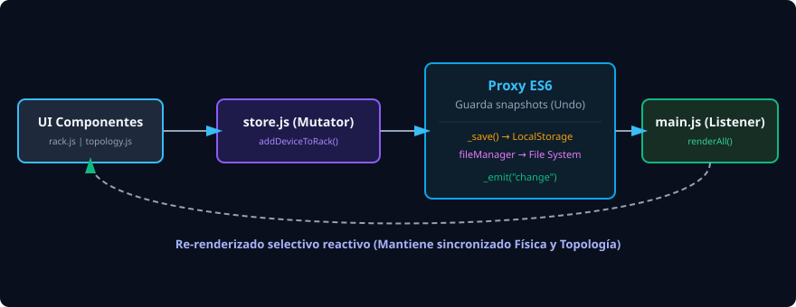
Este mapa ilustra el árbol de importación y dependencias lógicas. En un extremo tenemos los archivos base que no conocen al resto (utils.js, store.js y el catálogo de plantillas), seguidos por los componentes visuales de UI que consumen los servicios del store, y finalmente la estructura de vistas de index.html que ensambla todo.
Estructura de Directorios y Segmentación
Mantener una arquitectura modular y separada por directorios es fundamental para la escalabilidad y el mantenimiento. En este proyecto separamos estrictamente la lógica de estado global (store.js) de la lógica de interfaz de usuario e interacción humana (dentro de js/ui/).
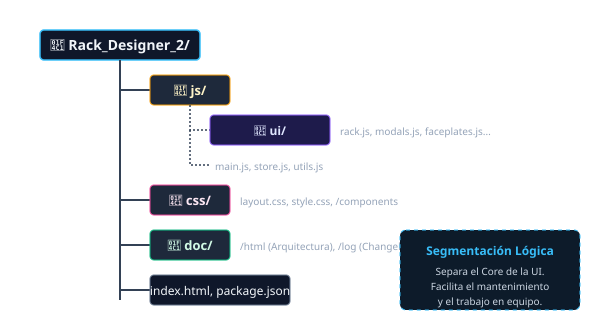
- Colaboración Eficiente: Permite a los desarrolladores UI modificar archivos en
js/ui/sin temor a romper la persistencia o el modelo de datos maestro enstore.js. - Mantenibilidad (Responsabilidad Única): Si falla el renderizado del Rack, se inspecciona directamente
rack.js. Si el problema es arrastrar items, escatalog.js. Se evita el temido "código espagueti" o monolitos inmanejables. - Reutilización y Limpieza: Herramientas compartidas (IDs únicos, matemáticas, validación de IP) viven aisladas en
utils.js, disponibles sin amarrarse a componentes visuales.
Archivos de Configuración e Interfaz Principal
#app),
los diálogos modales inyectados por JavaScript y los scripts que componen el sistema.
Maneja la inicialización temprana de los temas oscuros/claros en el <head> para prevenir el parpadeo de pantalla (FOUC).

Hojas de Estilo y Visuales
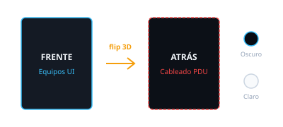
- Variables del Tema: Toda modificación de colores debe realizarse en
:rooto en[data-theme="light"]. No uses colores planos con hexadecimal en selectores hijos. - Efecto Flipper: Las animaciones 3D de las tarjetas de los racks se controlan con la propiedad
transform-style: preserve-3dybackface-visibility: hidden. Si alteras esto, el giro visual trasera/frontal fallará. - Vistas traseras: En el Modo Claro, el diseño estipula mantener la vista trasera de los racks con colores oscuros para mantener legibles los cables de colores.
Lógica de Control y Estado

store.state.racks.push(...))
dispara la sincronización automática con localStorage y emite el evento de cambio global.
Incluye un histórico de hasta 30 snapshots para Deshacer (Undo) / Rehacer (Redo).

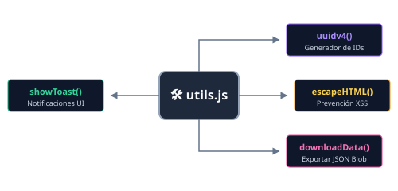
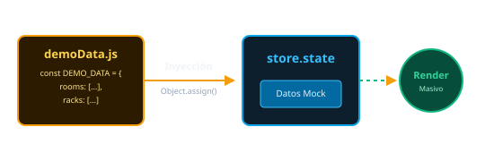
Componentes de Interfaz y Gráficos
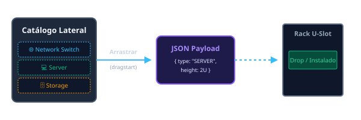
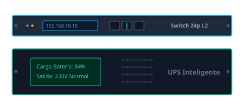
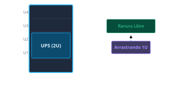
Mejoras Funcionales de Interfaz
- Atajos en Canvas Vacío: Lógica condicional que renderiza botones rápidos directos en
view-physical-contentcuandostore.currentRacksestá vacío.
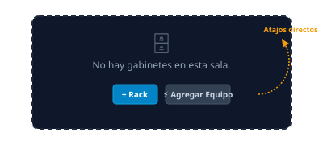
- Menú Contextual de Rack: La botonera
rack-hdr-btnsse refactorizó para agrupar las herramientas en un menú desplegable interactivo (rack-menu-toggle), asistido por un event listener global para auto-cierre.
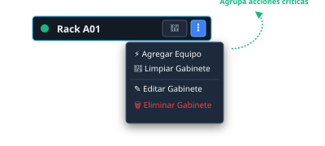
- Sincronización al Girar: Cuando agregues un evento a las tarjetas físicas, recuerda que el giro destruye y vuelve a crear elementos en
renderPhysical(). Debes conservar los IDs activos en el setflippedRackspara que un rack mantenga la vista trasera si el usuario lo giró previamente. - Cálculo de Espacio Libre (
canPlace): Si planeas agregar validaciones personalizadas (por ejemplo, evitar montar un servidor de 200kg arriba de un rack por peso), debes programarlas en esta función auxiliar para prevenir que el D&D del navegador active el estado 'drop-invalid'.
TopologyState.js, TopologyEvents.js, TopologyLayout.js, TopologyRenderer.js y un TopologyOrchestrator.js. Dibuja nodos, curvas Bézier cúbicas e interacciones a 60fps con el Canvas.

- Bucle de Dibujo (
TopologyRenderer.js): Nunca agregues peticiones AJAX o lógica asíncrona aquí, ya que se ejecuta a 60fps y congelará el scroll del mapa.
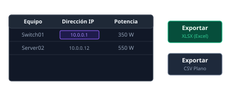
DeviceModal.js, RackModal.js, ExportModal.js, etc.
El ExportModal.js contiene la renderización gráfica del SVG/PNG final de la estructura usando canvas virtual.
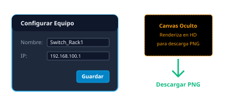
- Variables Modales Aisladas: Al separar los modales, asegúrate de importar el
storey referenciar las variables compartidas correctamente.
.json local sin cajas de descarga. Habilita el autoguardado inteligente silencioso cuando un proyecto es abierto nativamente, junto con opciones de fallback estándar para navegadores no compatibles.
Servicios en Segundo Plano y Offline
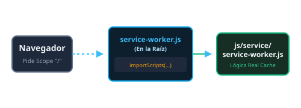
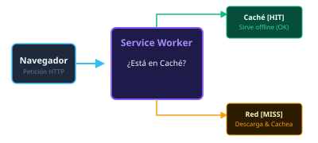